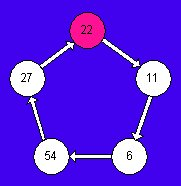

ULAM |
On the 14th annual American Junior High School Mathematics Examination (1998) there appeared the following problem, which I share with you here:
Terri produces a sequence of positive integers by following three rules. She starts with a positive integer, then applies the appropriate rule to the result, and continues in this fashion.
Rule 1: If the integer is less than 10, multiply it by 9.
A sample sequence: 23, 18, 9, 81, 76, ...
Find the 98th term of the sequence that begins with 98, 49, ...
Problem #22:
Rule 2: If the integer is even and greater than 9, divide it by 2.
Rule 3: If the integer is odd and greater than 9, subtract 5 from it.
(A) 6 (B) 11 (C) 22 (D) 27 (E) 54
Perhaps at first glance this appears to be sort of a hard problem, or at the very least a time consuming one. Especially when you realize that it is the 22nd item on a 25-item contest exam for which there is a 40-minute time limit.
But on closer examination it soon becomes apparent that there is a cyclic pattern involved in the terms that result from applying the three rules. The sequence begins this way:
Do you see that very quickly one of the numbers repeats itself? The number 22 arose in the 4th and 9th positions. This means there is a repeating cycle of five terms.
|  |
Our goal is to determine the 98th term. But if we remove the first three, the problem reverts to one which asks:
Of course, it would be the 5th term of the cycle! Hence, the correct response to the question above is 27. What once seemed a lengthy sort of solution turned out to be incredibly short.
This looks a lot like something that was discussed in this website in an earlier article, the Ulam problem. In that article we had cycles of numbers occurring also. And this resembles a famous class of problems that make the rounds of many math contests, ones like
What is the unit's digit of 31998?
and so on. [See The 100th Letter.]
But there's more, much more to this problem than just getting the answer of 27. Recall that in the Ulam article we analyzed what happened when the rules given there were applied to many different numbers -- specifically all those from 1 to 100. By way of refreshing your memory, we will state the general results here. For the first set of rules, all numbers sooner or later arrived to a simple three-term cycle of 4, 2, 1 (which returned to 4). For the second set of rules, all numbers entered one of three distinct cycles of varying numbers of terms (lengths of 2, 5, and 18).
Well, what about this new set of rules? Do all numbers flow into the cycle shown above? Or are there other cycles? One more? Two? How many? You see, after solving the original contest item, the real fun begins; now it's time to do the real mathematics! I leave this matter in your hands now. I don't want to spoil your pleasure at discovering the results for yourself.
Surprise! Surprise! It's not over yet. (You thought you were through with your homework, didn't you?)
You see, problems like this one for me are like eating popcorn, once I start asking questions, I just can't stop. The original contest problem from the AJHSME seems to me to be just one of many possible scenarios. The three rules as given are just begging to be adapted slightly to produce new problems. Here is an example of what we mean:
What cycle or cycles result from these rules?
Did you notice the small change in the third rule? Now we subtract 3 instead of 5 from all odd numbers greater than 9. Small change, you say? True enough. But that little change is probably going to change our cycles quite a bit, don't you think? Investigate this one to see what happens.
Then after that, try this:
What cycle or cycles result from these rules?
This time we retained the subtraction of 5 in Rule #3, but changed Rule #1 to "multiply by 7". Again, this subtle change makes a big difference in the outcomes, as I'm sure you're beginning to suspect. But just what are the resulting cycles? That's what I leave to you to find out.
In general, we have before us a whole family of problems, similar in basic structure, but each one with its own distinct character. Very probably you can now begin to create your own variations of the original problem. You could change the subtraction value in Rule #3 to other odd numbers, like 1 or 7, or 9. [What would happen if an even number were used?] And you could change the multiplier in Rule #1 to some other value as well. But Rule #2 is probably better left as is, because not all even numbers are divisible by other numbers. To do so would bring up the nasty trouble of what to do with the "remainders"!
POSTSCRIPT
Send me the results of your research. I'd like to hear about what you have found.
For more activities of a simple cyclic nature, look at Happy & Dizzy Numbers, or Kaprekar.
For more information about the AJHSME [renamed as AMC 8], contact
| Comments? Send e-mail. | Back to top | Go back to Home Page | Go back to Contents |